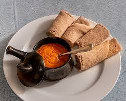

Shero
Home

Description
An essential part of Eritrean and Ethiopian cuisine, its primary ingredient is powdered chickpeas or broad bean meal and often prepared with the addition of minced onions, garlic and, depending upon regional variation, ground ginger or chopped tomatoes and chili peppers.
Ingredients
- a base of powdered chickpeas or broad beans and a spice blend
- often including berbere
- garlic and onions
Steps
- first sauté onions and garlic in a pot with oil until softened
- add chickpea flour (shiro) and water
- whisking to combine into a smooth consistency